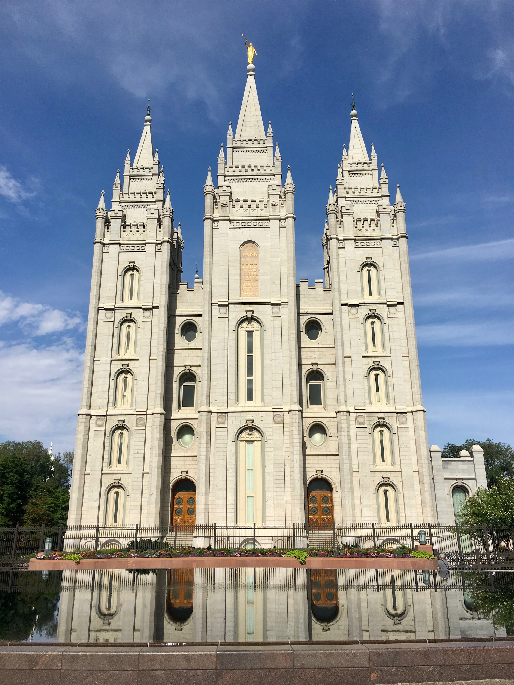
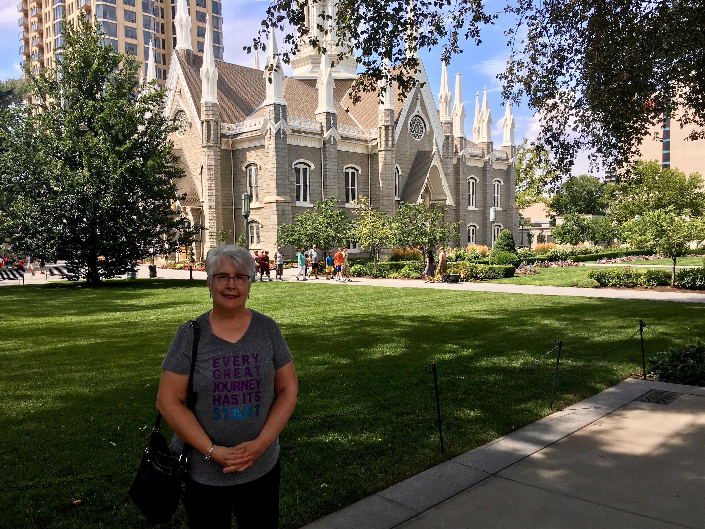
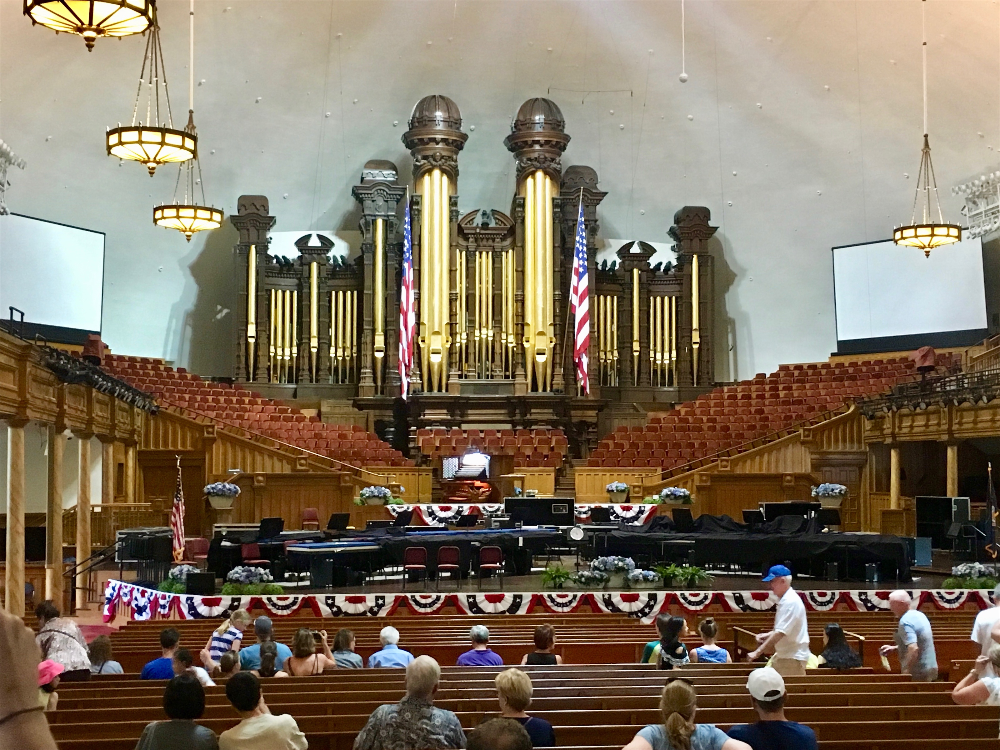
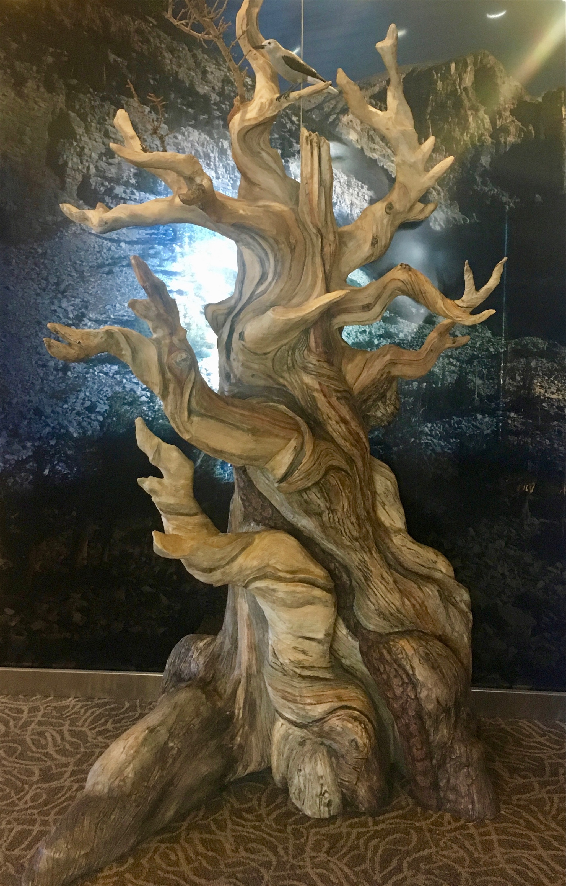
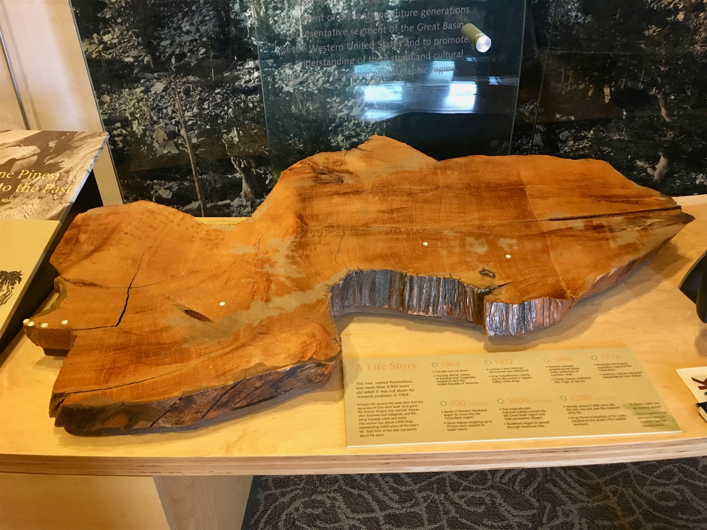
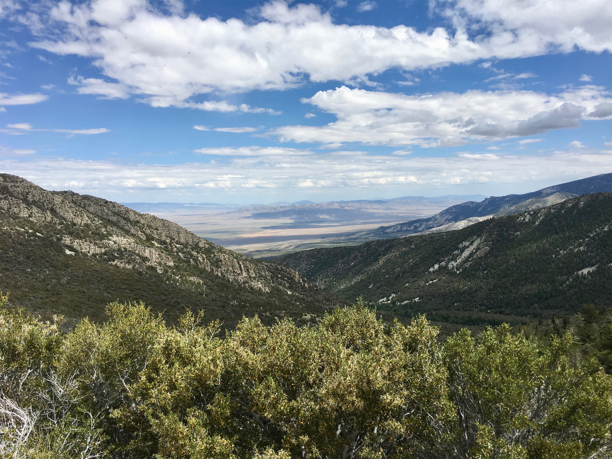
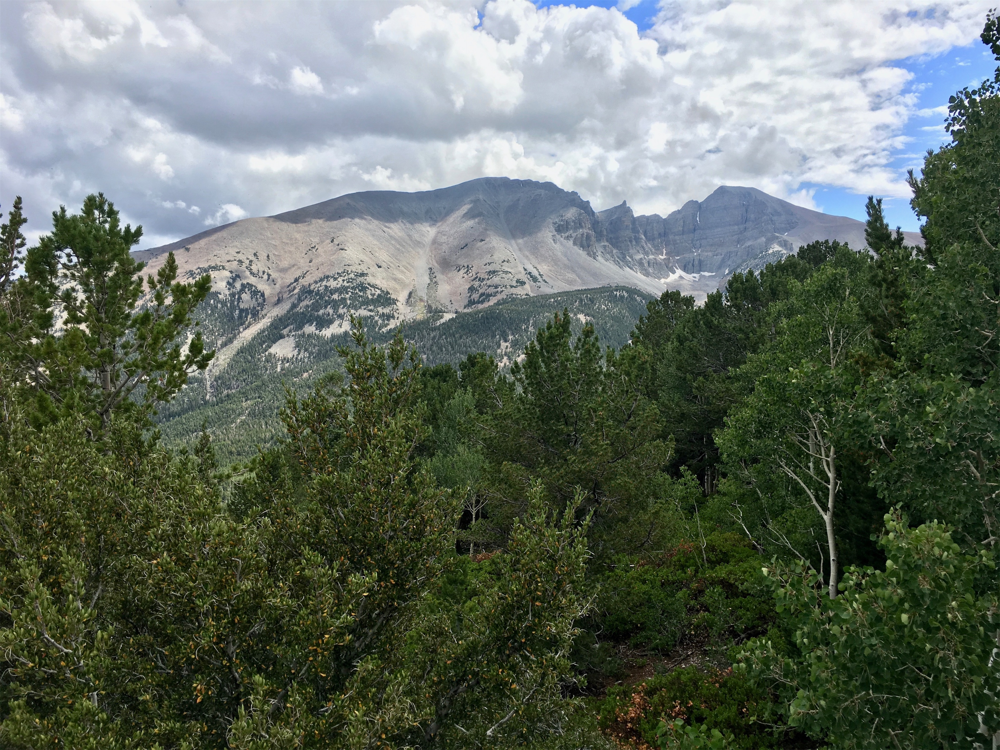
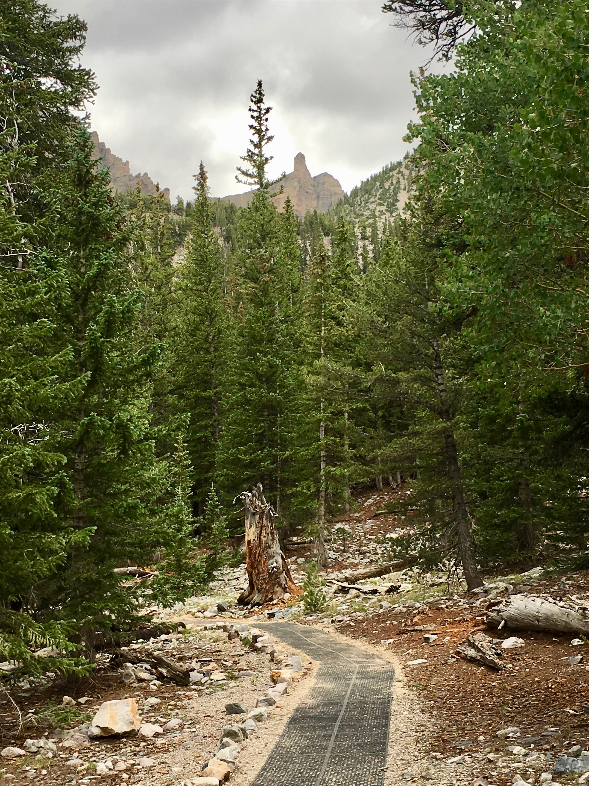

Sunday, Jul 22, 2018, 1:24 PM PDT
Great Basin Visitor Center, Baker, NV, United States
84°F Partly Cloudy
84°F Partly Cloudy
![]()
7/19 Jackson Lake Lodge, WY -> Idaho Falls, ID 137 mi, 5 hr
7/20 Idaho Falls, ID -> Salt Lake City, UT 227 mi, 4 hr
7/21 Salt Lake City, UT -> Temple Square -> Park City, UT (RT) 65 mi, 5 hr
7/22 Salt Lake City, UT -> Great Basin Visitor Center, NV 228 mi, 3.75 hr
7/22 Great Basin Visitor Center, NV -> Wheeler Peak -> Baker, NV 36 mi, 2.75 hr
Trip Total: 8,909 mi
As we left the Grand Tetons west to Idaho Falls for our overnight stay, we still saw plenty of Chinese tourists. It turns out that Yellowstone is on the bucket list for many of their wealthier citizens because it offers an exotic adventure in the famous American West, complete with clean air and wild animals. The US also has gun ranges, and some in the area specifically cater to Chinese tourists who want this experience too. Idaho Falls also has (surprise) falls, in a very nice downtown park along the Snake River. As we continued south to Salt Lake City (SLC), the ever-present huckleberry that we saw on every menu and in every gift shop since we crossed from Washington into the Idaho panhandle (it is their state fruit) disappeared, so no more huckleberry smoothies, jam, candy, and lip balm.
In SLC, we had a nice dinner with Deb’s aunt Marian and uncle Gary, and her cousin Keith and his family. The next day, we walked around the Mormon Church’s Temple Square, which is a walled/gated area that includes the 19th century temple and the oddly-shaped and smaller-than-we-expected 1867 Tabernacle, where we attended an organ recital on their historic 11,623-pipe instrument. The building looks like a small, aluminum-roofed Metrodome. They now use a massive conference center for big events (it seats 21,000), but it was closed in preparation for the state Pioneer Day holiday on Tuesday, which commemorates the Mormon pioneers passage into the Salt Lake Valley in 1847. Across the street, Brad explored the Family History Library, which is the largest genealogical library in the world. We then drove to Park City, about 25 miles away up in the mountains, home of the US winter olympics, the Sundance Film Festival, an historic downtown with expensive shops and little parking, and beautiful people. We did have a nice, healthy lunch there. Overall, SLC was one of our favorite cities.
The next morning, we drove southwest through mountains and eventually a huge desert valley to Baker, Nevada (population 68), home of the Great Basin National Park, the Stargazer Inn and its adjacent excellent restaurant called Kerouac’s (named after the author Jack and his book “On the Road”). This park isn’t very popular, but it (along with the inn and restaurant) were the subject of a recent New York Times article about hidden gems. We drove up the scenic drive to 9,500 ft of the 13,000 ft Wheeler Peak, where it was 20 degrees cooler, for a great view of the seemingly-infinite expanse of the Snake Valley. The Peak is home to gnarly Bristlecone Pines, which are the oldest living things on earth. The visitors center has a cross section of the >4,862 year-old tree named Prometheus that a grad student cut down (with permission) in 1964, which sparked such outrage that it led to the National Park designation. We skipped the cave tour, another main park attraction. On the Peak, we walked the nice 0.4 mile Island Forest Nature Trail, but regretfully skipped the Bristlecone Trail that would have led us to a grove of these trees because it was too tough at that time of day. We had a nice dinner, and then breakfast, at Kerouac’s. Unfortunately, with clouds and a near full moon, we couldn’t stargaze in this famously dark park. This marks the last of the westward legs, as we cross the border back to Utah and head southeast to Zion.








